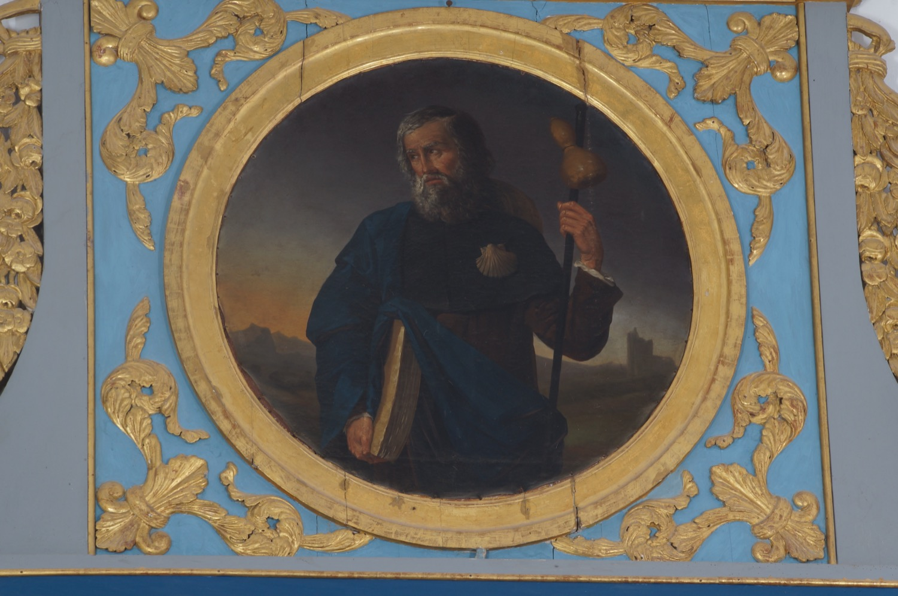

Sant Jaume el Major (s. I) va ser un dels dotze apòstols i el germà gran de sant Joan l’Evangelista. Formà part del grup de deixebles més proper a Jesús, i després de la seva mort predicà per Samària, Judea i, segons la tradició, també per la península Ibèrica. Va ser el primer apòstol que morí martiritzat, manat decapitar per Herodes Agripa II per acontentar els jueus. Segons la llegenda, les seves despulles varen ser traslladades a Galícia per sis deixebles i descansen a Santiago de Compostel·la.
En aquesta pintura se’l representa en el model conegut com “sant Jaume pelegrí”, amb indumentària i bastó de pelegrí, del qual penja una carabassa que servia de cantimplora, i amb una vieira al pit, emblema característic dels pelegrins a Santiago de Compostel·la. Porta, a més, un llibre sota el braç, que al·ludeix a la seva condició d’apòstol i a la seva missió evangelitzadora.